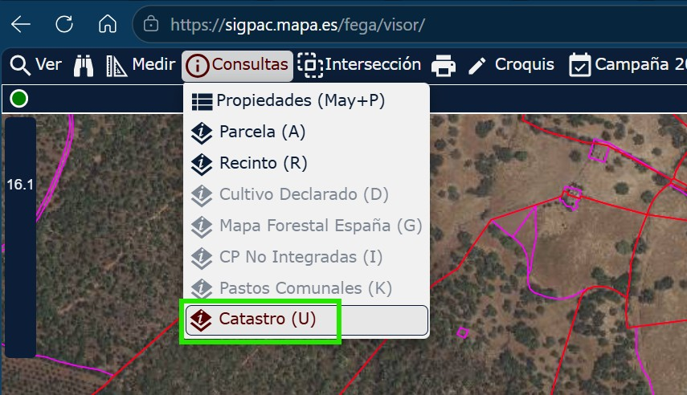
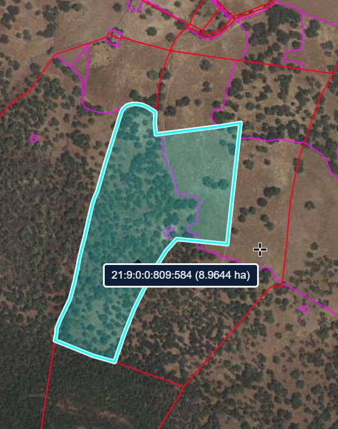
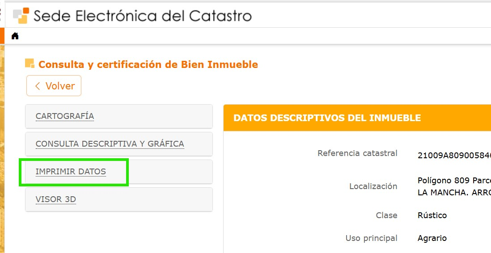
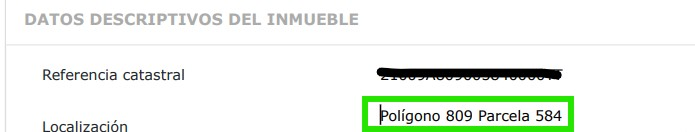
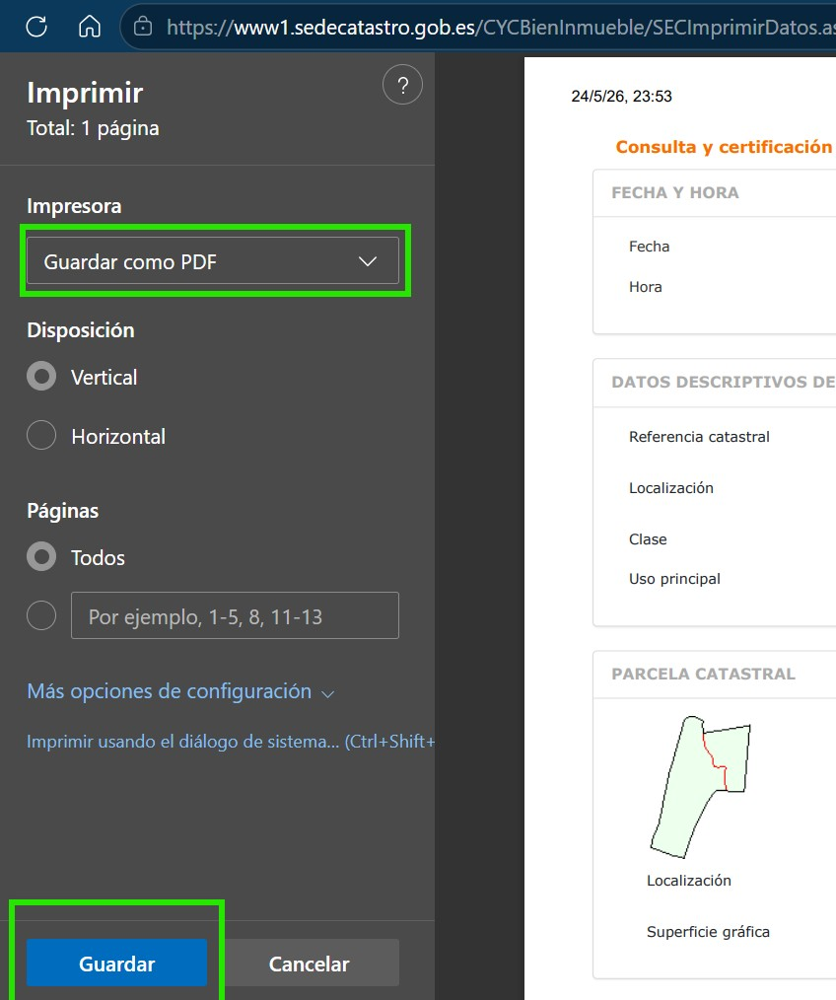
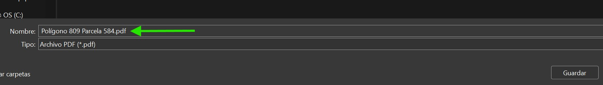
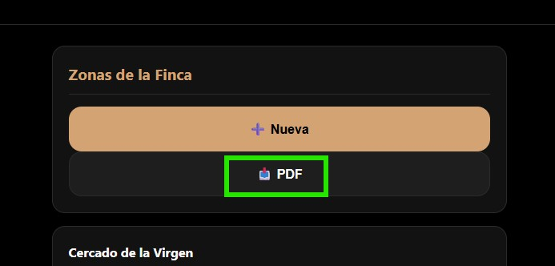
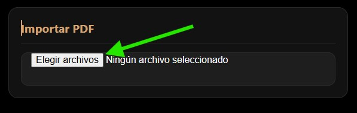
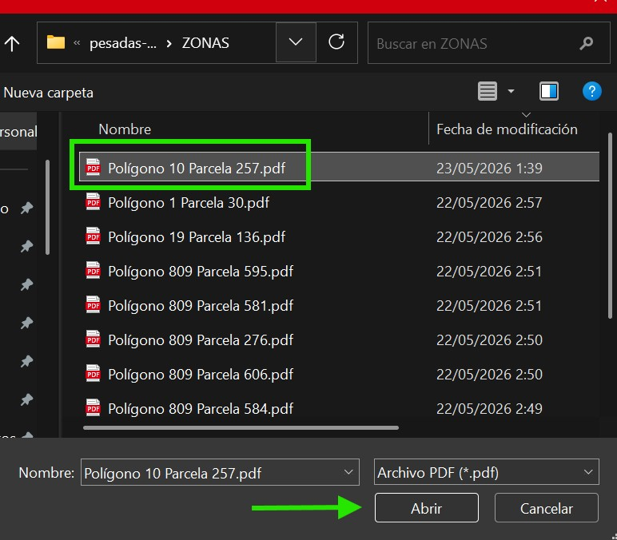
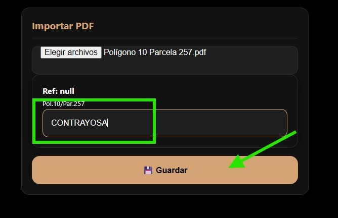

1. Exportar PDF desde el SIGPAC
Sigue estos pasos para obtener el PDF oficial de datos catastrales desde la sede electrónica del Catastro (sede.catastro.gob.es) antes de importarlo en la app.
1.1 Accede al SIGPAC
Ve al SIGPAC (sede.catastro.gob.es) y selecciona la opción de Catastro para comenzar el proceso de obtención de datos técnicos.

[CAPTURA] zonas-sigpac-01.jpg Accede a SIGPAC y selecciona Catastro.1.2 Selecciona la parcela
Haz clic en la parcela exacta. El sistema desplegará la ficha con todos los datos descriptivos del inmueble.

[CAPTURA] zonas-sigpac-02.jpg Selecciona la parcela en el mapa.1.3 Imprimir Datos
Selecciona «Imprimir Datos» para generar el documento oficial en formato PDF.

[CAPTURA] zonas-sigpac-03.jpg Genera el PDF oficial con Imprimir Datos.1.4 Identifica polígono y parcela
Copia el nombre del Polígono y Parcela. Estos datos son cruciales para el reconocimiento automático de la aplicación.

[CAPTURA] zonas-sigpac-04.jpg Copia el nombre del polígono y parcela.1.5 Guarda como PDF
Elige la opción de guardar como PDF. Asegúrate de que el documento incluya el croquis y la tabla de cultivos.

[CAPTURA] zonas-sigpac-05.jpg Guarda el PDF con croquis y tabla de cultivos.1.6 Nombra correctamente el archivo
Guarda el archivo localmente con el nombre copiado. La aplicación leerá el contenido textual para extraer la Referencia Catastral automáticamente.

[CAPTURA] zonas-sigpac-06.jpg Guarda el PDF con el nombre correcto.2. Importar PDF en la Aplicación
Una vez tienes el PDF exportado del SIGPAC, súbelo a la aplicación para registrar la zona automáticamente.
js/views/importar-zonas-view.js · window.ImportarZonasView2.1 Abre Zonas
Dentro de la aplicación, navega al menú inferior y pulsa en el icono de mapa «Zonas».

[CAPTURA] zonas-sigpac-07.jpg Abre la app y ve a Zonas.2.2 Importar PDF
Usa el botón de importación. Puedes seleccionar varios archivos PDF a la vez para cargarlos en bloque.

[CAPTURA] zonas-sigpac-08.jpg Importa el PDF en la aplicación.2.3 Selecciona el archivo
Elige el archivo desde tu gestor de archivos. La app procesará la superficie y la localización al instante.

[CAPTURA] zonas-sigpac-09.jpg Selecciona el PDF y acepta.2.4 Confirma y guarda
Verifica que los datos son correctos, introduce un nombre familiar y guarda. La tabla de subparcelas se generará automáticamente.

[CAPTURA] zonas-sigpac-10.jpg Confirma y guarda la zona.